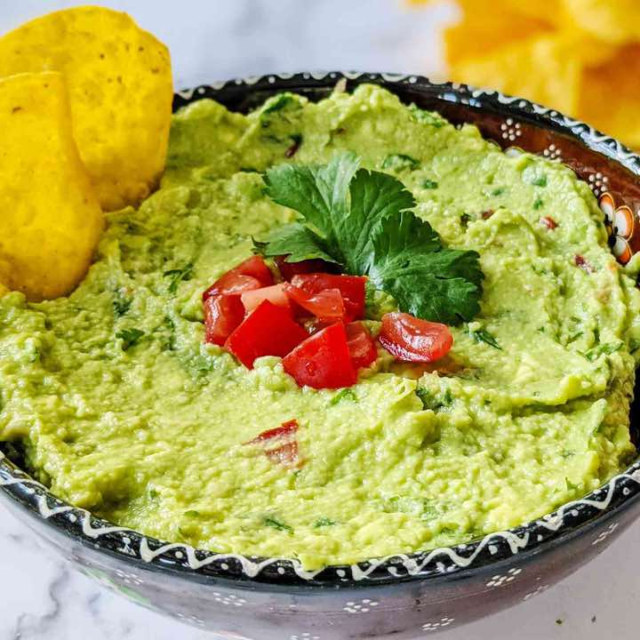

Guacamole
Side Dish
Servings4
PrepPT15M
CookPT0S

Ingredients
- 3 avocados - peeled, pitted, and mashed
- 1 lime, juiced
- 1 teaspoon salt
- 2 roma (plum) tomatoes, diced
- 0.5 cup diced onion
- 3 tablespoons chopped fresh cilantro
- 1 teaspoon minced garlic
- 1 pinch ground cayenne pepper
Directions
- Mash avocados, lime juice, and salt together in a medium bowl; mix in tomatoes, onion, cilantro, and garlic. Stir in cayenne pepper.
- Serve immediately, or cover and refrigerate for 1 hour for improved flavor.
Source
https://www.allrecipes.com/recipe/14231/guacamole/
This page includes Schema.org Recipe structured data for recipe importers.